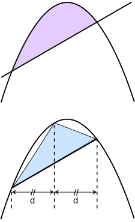

| The ancient period introduced some of the ideas that led to integral calculus, but does not seem to have developed these ideas in a rigorous and systematic way. Calculations of volume and area, one goal of integral calculus, can be found in the Egyptian Moscow papyrus (13th dynasty, c. 1820 BC), but the formulas are simple instructions, with no indication as to method, and some of them lack major components.[5]
From the age of Greek mathematics, Eudoxus (c. 408–355 BC) used the method of exhaustion, which foreshadows the concept of the limit, to calculate areas and volumes, while Archimedes (c. 287–212 BC) developed this idea further, inventing heuristics which resemble the methods of integral calculus.[6]
The method of exhaustion was later discovered independently in China by Liu Hui in the 3rd century AD in order to find the area of a circle.[7] In the 5th century AD, Zu Gengzhi, son of Zu Chongzhi, established a method[8][9] that would later be called Cavalieri's principle to find the volume of a sphere. |
 |